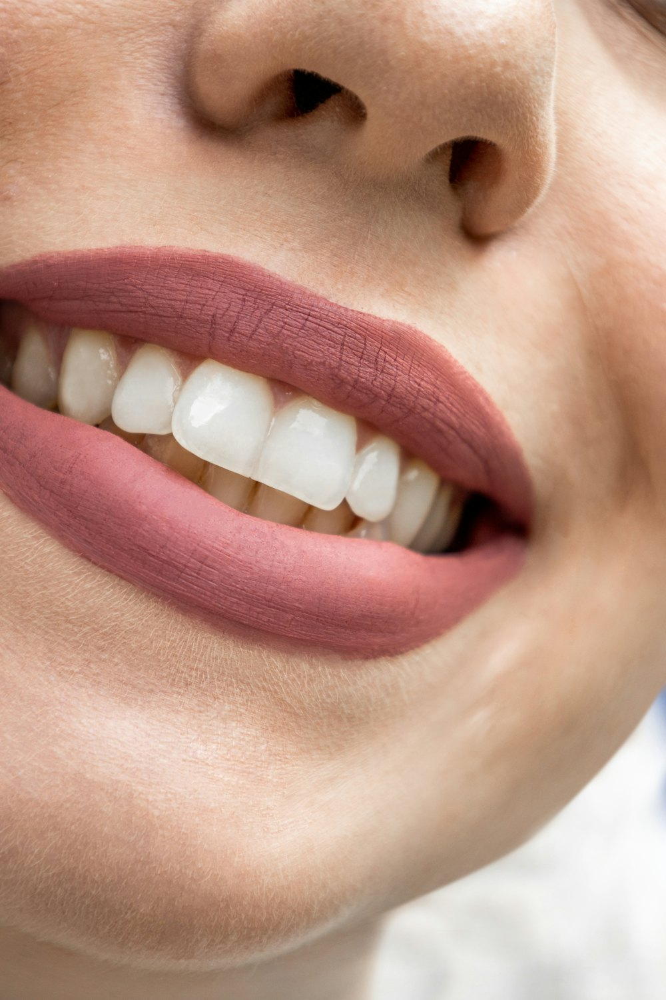
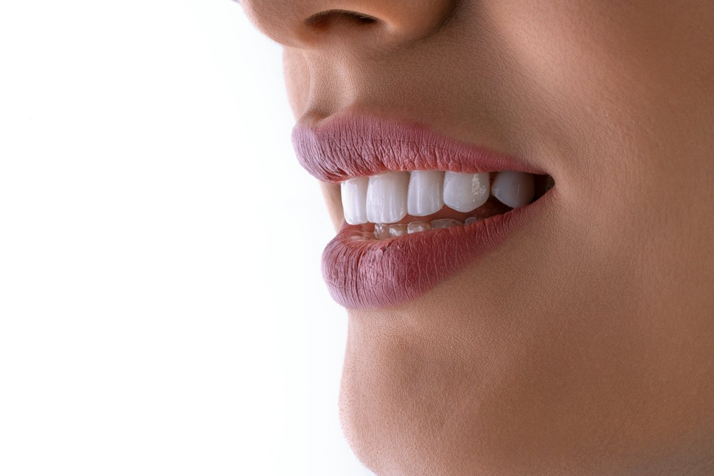
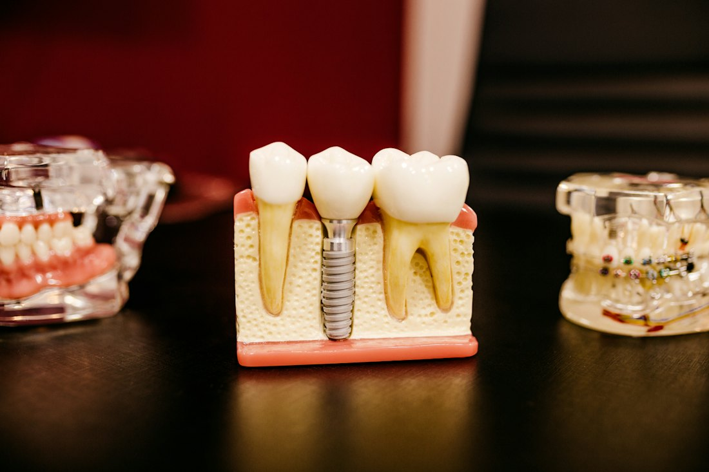
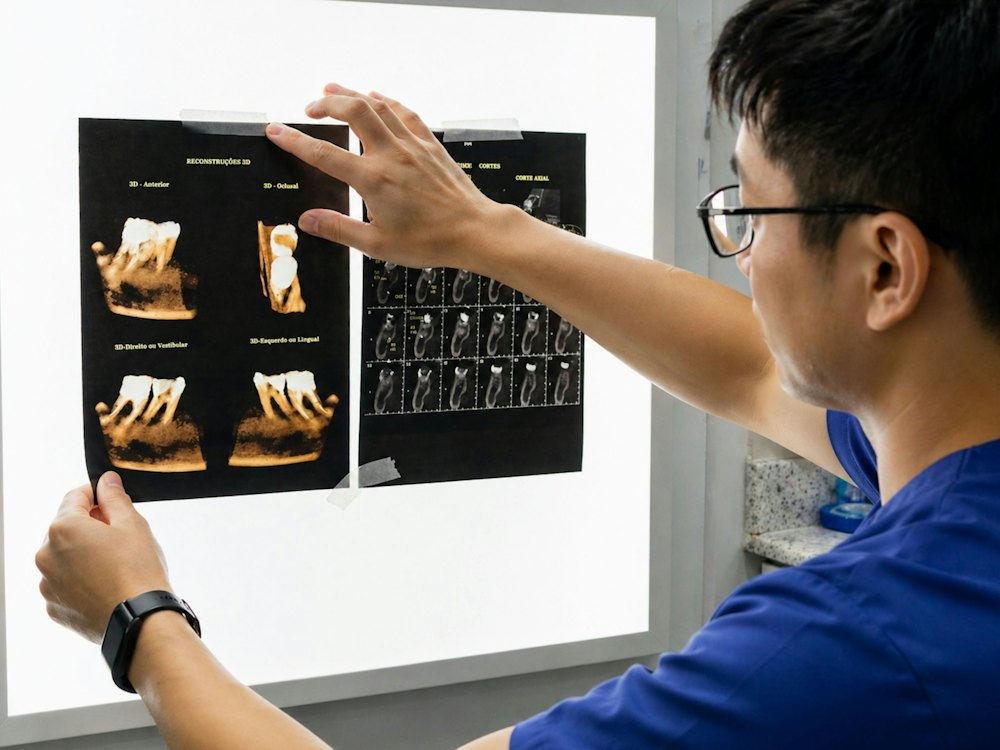
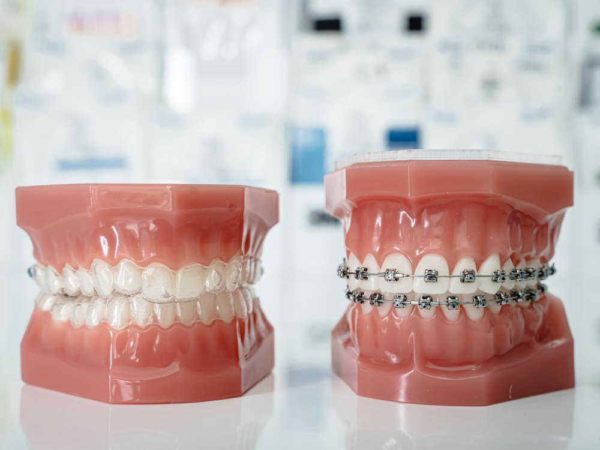
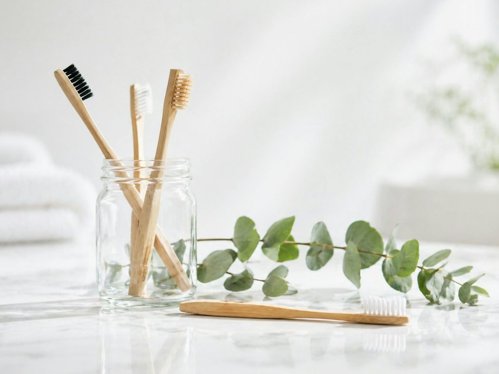
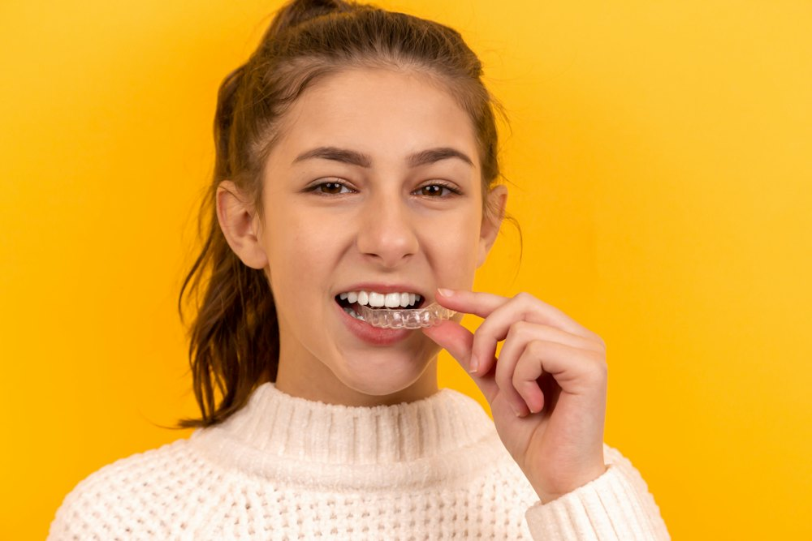
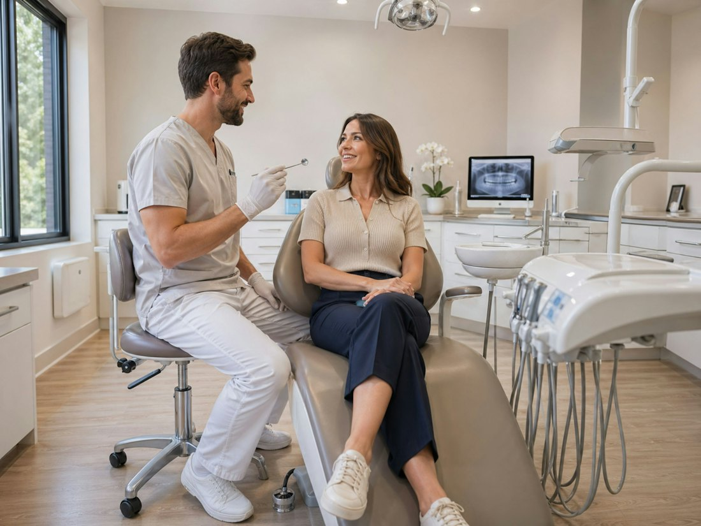

«Прекрасна клініка, нещодавно тут лікувалась.»
Лікування без болю, лікарі пояснюють кожен етап із фото.
Стоматологія · Івано-Франківськ, центр
Kulyk Medicine спеціалізується на складних і комплексних роботах: від професійної гігієни до мікрохірургії. Ви бачите кожен етап лікування на екрані й заздалегідь знаєте план, терміни та вартість.
 ×25 · дентальний мікроскоп
×25 · дентальний мікроскоп
Чому мікроскоп
Зуб виглядає цілим. Але тріщини, додаткові канали й залишки старої пломби на такому збільшенні просто не помітні.
Краще видно поверхню й межі пломби. Для кореневих каналів цього все одно мало: вони тонші за волосину.
Лікар бачить кожен канал і мікротріщину, тож прибирає лише уражене і зберігає здорові тканини. За даними клініки, лікування каналів успішне більш ніж у 85 % випадків.

Наведіть на фото, щоб подивитись крізь лінзу
Послуги
Від першої консультації до гарної усмішки: терапія, хірургія, протезування, ортодонтія й гігієна. На складних випадках лікарі працюють командою.

Головна спеціалізація клініки. Повертаємо до життя зуби, які в інших місцях радять видаляти: знаходимо всі канали, ретельно їх очищаємо й герметично пломбуємо.

Лікуємо карієс і відновлюємо форму зуба так, що реставрацію не відрізнити від власної емалі. Для естетики усмішки робимо цифрові вініри: спершу ви бачите результат на макеті.

Відновлюємо втрачені зуби імплантами, а якщо бракує кісткової тканини, спершу її нарощуємо. Мікрохірургічний підхід означає менше травми й швидше загоєння.

Протезування плануємо за цифровою діагностикою. Для оцінки роботи суглоба й прикусу використовуємо оптичний аксіограф, тому коронки не просто гарні, а й правильно працюють.

Вирівнюємо зуби брекет-системами під ваш випадок і бюджет. Клініка встановлює індивідуальну брекет-систему виробництва США, яку виготовляють саме під ваші зуби.

Професійна чистка двічі на рік зберігає зуби надовго й економить гроші на лікуванні. Прибираємо камінь і наліт, поліруємо й зміцнюємо емаль.

Лікуємо дітей швидко й без болю, щоб наступний візит до стоматолога не лякав. Батьки у відгуках пишуть, що діти виходять із кабінету усміхненими.
Вартість залежить від клінічної ситуації, тому точну ціну лікар називає після огляду. На консультації ви отримуєте варіанти лікування з плюсами, мінусами, вартістю й термінами.
Як ми лікуємо

Огляд, цифрова діагностика, за потреби оцінка прикусу оптичним аксіографом. Знаходимо причину, а не лише симптом.
Лікар пояснює варіанти лікування, їхні плюси й мінуси, скільки це коштуватиме і скільки триватиме. Рішення ухвалюєте ви.
Працюємо під мікроскопом і з якісною анестезією. Кожен етап показуємо на фото, щоб ви бачили, що відбувається.
Клініка дає довгострокову гарантію на роботи й запрошує на контрольні огляди, щоб результат тримався роками.
Лікар і засновник
Лікар-ендодонтист · директор Kulyk Medicine
«Наша клініка спеціалізується на складних і комплексних роботах.»
Роман Ігорович займається лікуванням кореневих каналів, реставрацією зубів і лікуванням під мікроскопом. Пацієнти у відгуках окремо відзначають його консультації: детально, з усіма варіантами, плюсами й мінусами.
Відгуки пацієнтів
«Прекрасна клініка, нещодавно тут лікувалась.»
Лікування без болю, лікарі пояснюють кожен етап із фото.
«Улюблена стоматологія!»
Сервіс, атмосфера й професійний підхід.
«Консультувалась із лікарем Романом Ігоровичем…»
Детальна консультація: варіанти лікування, плюси й мінуси, вартість і терміни.
«Якщо ви кажете, що стоматолог це боляче, тоді це не так)»
Без болю, сучасне обладнання й приємний інтер'єр.
«Дуже люблю Kulyk Medicine і довіряю:) Спеціалісти на вищому рівні, завжди приємні і впевнені у своїй роботі.»
Постійна пацієнтка.
«Професійно, швидко, якісно.»
Семирічна донька вийшла з прийому з усмішкою.
«Лікуюсь в Kulyk Medicine вже роками…»
Індивідуальний підхід до неї та її доньки.
«Високий рівень! Хороші спеціалісти!»
Якість роботи й спеціалісти.
Питання
Ні. Лікування проходить під якісною анестезією, а пацієнти у відгуках окремо пишуть, що в Kulyk Medicine не боляче, навіть дітям.
Ціна залежить від стану зуба й обраного рішення. На консультації лікар показує варіанти, пояснює плюси й мінуси кожного та називає вартість і терміни. Після цього ви вирішуєте, як рухатися далі.
Канали тонші за волосину, і частину з них неможливо побачити оком. Мікроскоп дає змогу знайти й пролікувати кожен канал, а отже, зберегти зуб, а не видаляти його.
Так, у клініці є дитяча стоматологія. Ми працюємо спокійно й швидко, щоб дитина не боялася наступного візиту.
Так, клініка дає довгострокову гарантію на свої роботи. Умови гарантії для вашого лікування лікар пояснить на консультації.
Подзвоніть за номером +380 66 525 63 88, напишіть нам в Instagram або залиште заявку у формі нижче, і адміністратор передзвонить вам.
Запис і контакти